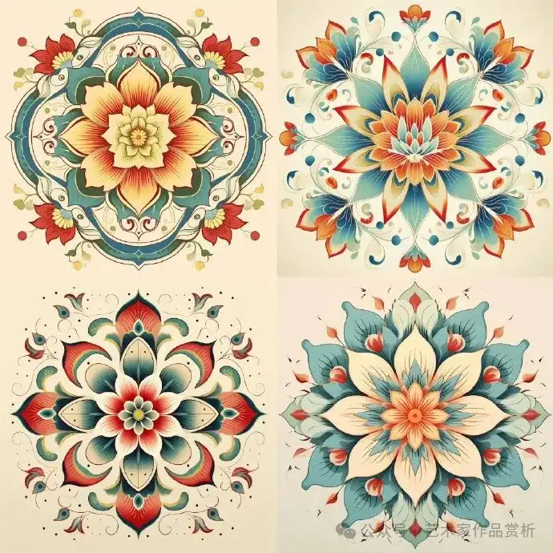
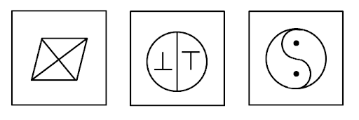

对称性
“对称美”是自古以来中国的一种审美形式，实际生活中、传统文化里、自然界中对称的例子比比皆是，体现着数学的“对称美”。对称性


对称性
对称性
对称性
对称性
对称性
观察$f(x)=x^3$的旋转对称性
观察$f(x)=\frac{1}{x} $的旋转偶函数与奇函数
- 一般地，设函数$f(x)$的定义域为$D$，如果$$\forall x\in D,-x\in D,f(x)=f(-x) $$ 那么函数$f(x)$就叫做偶函数
- 一般地，设函数$f(x)$的定义域为$D$，如果$$\forall x\in D,-x\in D,f(x)=-f(-x) $$ 那么函数$f(x)$就叫做奇函数
偶函数与奇函数
- 如果一个函数是偶函数，则这个函数的图象是以$y$轴为对称轴的轴对称图形；反之，如果一个函数的图象关于$y$轴对称，则这个函数是偶函数。
- 如果一个函数是奇函数，则这个函数的图象是以坐标原点为对称中心的中心对称图形；反之，如果一个函数的图象关于坐标原点成中心对称图形，则这个函数是奇函数。
偶函数与奇函数
| 分类 | 前提 | 定义 | 图象特点 |
|---|---|---|---|
| 偶函数 | 定义域$I$关于原点对称 | $f(x)=f(-x) $ | 关于$y$轴对称 |
| 奇函数 | 定义域$I$关于原点对称 | $f(x)=-f(-x) $ | 关于原点对称 |
偶函数与奇函数
- 具有奇偶性的函数的定义域关于原点对称。
- 不能用特殊值判断奇偶性。
- 已知奇偶性可代特殊值求参数。
- 若$f(x)$为奇函数且在$x=0$有定义，则必有$f(0)=0$。
奇偶性的应用
判断下列函数的奇偶性：- $f(x)=x^4$
- $f(x)=x^5$
- $f(x)=x+\frac{1}{x}$
- $f(x)=\frac{1}{x^2}$
奇偶性的应用
判断下列函数的奇偶性：- $f(x)=x^3+x$
- $f(x)=\frac{2x^2+2}{x+1} $
- $f(x)=\sqrt{1-x^2}+\sqrt{x^2-1} $
- $f(x)=\begin{cases}x+1 &x>0 \\ -x+1 & x < 0 \end{cases} $
奇偶性的应用
如何判断奇偶性：奇偶性的应用
如何判断奇偶性：- 定义法
- 图像法
- 奇函数与偶函数的四则运算法则
奇偶性的应用
奇函数与偶函数的四则运算法则$f(x),g(x)$为偶函数
- $f(x)\pm g(x)$为偶函数
- $f(x)g(x)$为偶函数
- $g(x)\neq 0,\frac{f(x)}{g(x)}$为偶函数
奇偶性的应用
奇函数与偶函数的四则运算法则$f(x),g(x)$为奇函数
- $f(x)\pm g(x)$为奇函数
- $f(x)g(x)$为偶函数
- $g(x)\neq 0,\frac{f(x)}{g(x)}$为偶函数
奇偶性的应用
奇函数与偶函数的四则运算法则$f(x)$为偶函数，$g(x)$为奇函数
- $f(x)g(x)$为奇函数
- $g(x)\neq 0,\frac{f(x)}{g(x)}$为奇函数